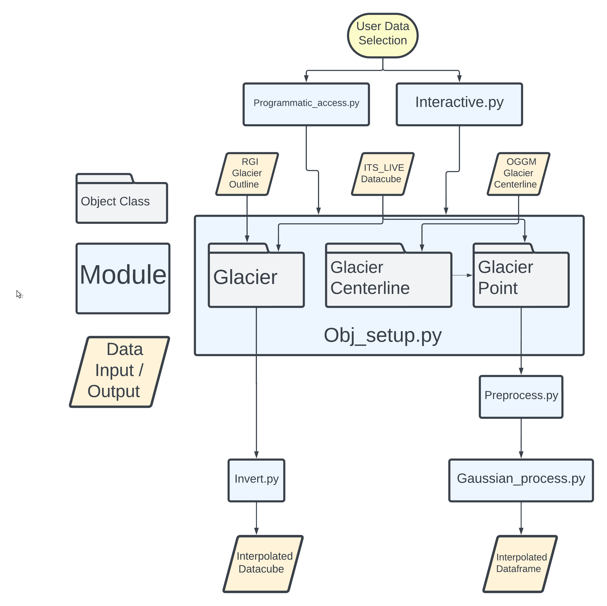

ITS_LIVE_TOOL#
Note
add figures, images of processed data, data access gifs etc. to readme
About#

ITS_LIVE_TOOL is a package designed to aid users working with the
Inter-mission Time Series of Land Ice Velocity and Elevation
(ITS_LIVE) dataset. The package provides functions for accessing data as
well as various methods to process ITS_LIVE observations.
Installation#
Eventually, we hope to have a pip install. For now, install via:
pip install git+https://github.com/vdevauxchupin/ITS_LIVE_TOOL
Overview#
The illustration below provides a high-level overview of the main object classes in ITS_LIVE_TOOL

Data Access + Organization#
We implement 3 object classes to store ITS_LIVE velocity data and auxiliary information with the goal of making it efficient and intuitive to keep track of and scale your analysis of ITS_LIVE data.
Interactive Widget#
This is an interactive map widget designed to streamline access to ITS_LIVE image pair velocity datasets and creation of ITS_LIVE_TOOL objects. To see an example of the interactive widget, check out interactive.ipynb. Use the widget in your workflow by importing the interactive module.
Programmatic Access#
You can also access data by specifying a RGI ID and point coordinates.
Glacier, Glacier_Centerline, Glacier_Point objects#
Note
once we have rendered docs, link add hyper links for these objects
These are meant to be container objects to store related pieces of data in easier-to-use locations. Depending on your purposes, create Glacier, Glacier_Centerline or Glacier_Point objects. You can do this using the interactive map widget or by manulaly passing input arguments. See obj_setup.ipynb for examples of each. Glacier objects contain RGI V7 outlines stored as geopandas.GeoDataFrame objects. Glacier_Centerlines contain OGGM centerlines, also stored as geopandas.GeoDataFrame objects. Glacier_Point objects use scripts made available by the developers of the ITS_LIVE dataset to access ITS_LIVE image pair ice velocity data.
Data Processing#
Note
link to book not working, still working on best way to build book
We demonstrate and make available two processing routines. Be sure to check out the accompanying book and consider if either of these are appropriate for your data and use case. Note that these methods are in active development and thus should be considered in beta phase. Please perform your own data inspection and due diligence if implementing these methods.
Data filtering#
Pre-processing methods for inspecting and removing outliers from ITS_LIVE time series. Temporal baseline threshold methods focus specifically on cases where the movement of slower glaciers may be near or below the noise threshold of the imaging sensors and feature tracking algorithms. These methods aim to determine a minimum temporal baseline threshold appropriate for a given dataset.
Inversion#
to add Description – link to full description and examples
How to use#
For a detailed, code-based walk through of ITS_LIVE_TOOL functionality, check out roadmap.ipynb notebook. This will demonstrate how to access ITS_LIVE data and use the interactive map widget and container objects provided in this package. It will also briefly describe and show sample outputs from the processing methods implemented in this package. For in-depth explanations of the processing methods, check out the individual notebooks where those steps will be described in much more detail.
Citing#
not sure if its appropriate/necessary here but i see some packages have a readme section for how to cite them if someone uses their work
Contact#
Glacier objects, Data filtering#
emma.marshall@utah.edu
Inversion, GUI#
vdevauxchupin@alaska.edu
Acknowledgements#
co-authors, funding sources, other collaborators
References#
Data#
[1] Velocity data generated using auto-RIFT (Gardner et al., 2018) and provided by the NASA MEaSUREs ITS_LIVE project (Gardner et al., 2023). https://its-live.jpl.nasa.gov/
[2] Maussion, F et. al (2019). The Open Global Glacier Model (OGGM) v1.1. Geoscientific Model Development. DOI: 10.5194/gmd-12-909-2019
[3] RGI 7.0 Consortium, 2023. Randolph Glacier Inventory - A Dataset of Global Glacier Outlines, Version 7.0. Boulder, Colorado USA. NSIDC: National Snow and Ice Data Center. doi:10.5067/f6jmovy5navz. Online access: https://doi.org/10.5067/f6jmovy5navz
Methods#
cite temporal inversion, other literature here?
Software#
packages used
Contributing#
We welcome community contributions to this work! Please don’t hesitate to raise an issue, start a discussion or reach out to us over email.